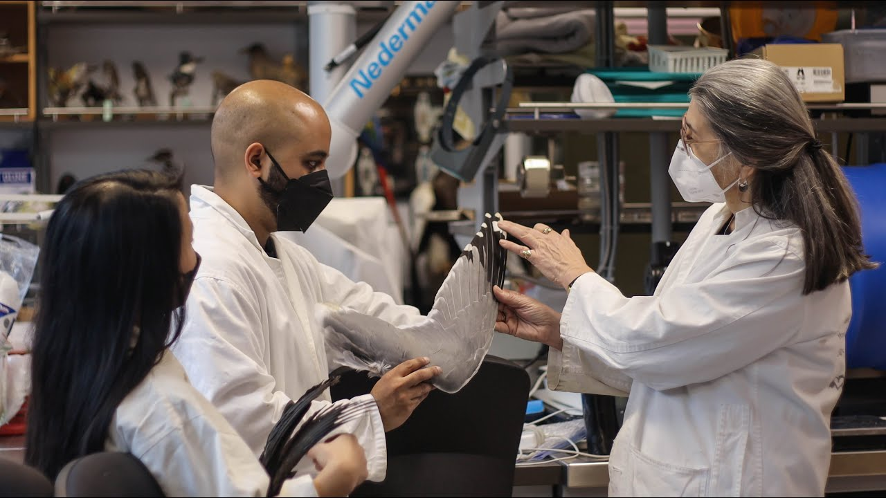

Press
Video segments
 Discovering the key to birds’ agility could improve drone design
UBC Science
March 9, 2022
 Evolution of bird maneuverability and lessons for UAV design
Evolution of bird maneuverability and lessons for UAV design
University of Michigan Engineering
March 9, 2022
 Building a better airplane by borrowing from birds
Building a better airplane by borrowing from birds
Crosscut’s Human Elements
April 19, 2020
 Beaty Biodiversity Museum’s Researchers Revealed
Beaty Biodiversity Museum’s Researchers Revealed
UBC Biodiversity Centre
February 24, 2020
Articles
The University of Michigan: Avian secret: The key to agile bird flight is switching quickly between stable and unstable gliding; March 9, 2022. Also covered by Phys.org, Canadian News Media, Head Topics, and Gamers Grade.
UBC Science: Discovering the key to birds’ agility could improve drone design; March 9, 2022.
Nature News and Views (written by Dr. Aimy Wissa): Trade-offs between stability and manoeuvrability in bird flight; March 7, 2022.
The Michigan Engineer News Center: Bird-like wings could help drones keep stable in gusts; June 10, 2021.
Journal of Experimental Biology - Outside JEB: Wing swing, not shape, is key to bird flight; February 3, 2020.
The Wildlife Society: Bird wing study reveals different flight development paths; November 15, 2019.
Vet Candy: Why are bald eagles such great gliders?; November 3, 2019.
Technology Org: Scientists are trying to figure out how birds hover, soar and glide; October 31, 2019.
Nature has no boss: Swimming through the air; October 31, 2019.
The Scientist: Image of the Day: Flight Styles; October 25, 2019.
United Press International (UPI): An eagle’s gliding ability relies on its wrist movements; October 24, 2019. Also covered by Brietbart, Space Daily and News of the Day.
Cosmos Magazine: Birds wing it in many ways; October 24, 2019.
CBC Radio-Canada: Le mystère entourant les styles de vol des oiseaux pourrait être résolu (in French); October 24, 2019.
La Presse: Les mystères des ailes d’oiseaux (in French); October 24, 2019.
Beaty Biodiversity Museum News & Stories: Rethinking wings; October 23, 2019.
EurekAlert! (AAAS): Why are bald eagles such great gliders? It’s all in the wrist; October 23, 2019. Also covered by Science Daily, PhysOrg, and UBC News. Featured image on EurekAlert!
Engineering.com: Gull Wing Morphing Research Aims to Enhance Flight Design; January 10, 2019.
Environmental News Network: A better way to fly? Researchers study birds and their wings; January 9, 2019.
The Hindu: Inspired by seagull’s wings; January 9, 2019.
University of Toronto News: A better way to fly? U of T and UBC researchers study birds and their wings; January 7, 2019.
The Times (UK): Gulls’ bendy wings point way ahead for smarter drones; January 3, 2019.
EurekAlert! (AAAS): Could gulls’ wings inspire smarter airplane design?; January 3, 2019. Also covered by AlphaGalileo and Lab Manager.
SciTech Europa: How studying gulls’ wings could improve aircraft design; January 3, 2019.
The Tribune (India): Seagull wings may inspire smarter airplane design; January 3, 2019. Also covered by The New Indian Express.
News Center Maine: Gull ‘wing morphing’ could be the future of airplane tech; Video by Amaze Lab; January 3, 2019.
Business Standard: Gull’s wings may help design smarter airplanes; January 3, 2019. Also covered by Hindustan Times, Canindia News, and Newkerala.com.
Science Daily: Engineers, zoologists reveal how gulls ‘wing morph’ for stable soaring; January 2, 2019. Also covered by Tech Xplore.
NRC Handelsblad: Wiebelende meeuw stabiliseert zich met slim ellebogenwerk (in German); January 2, 2019.